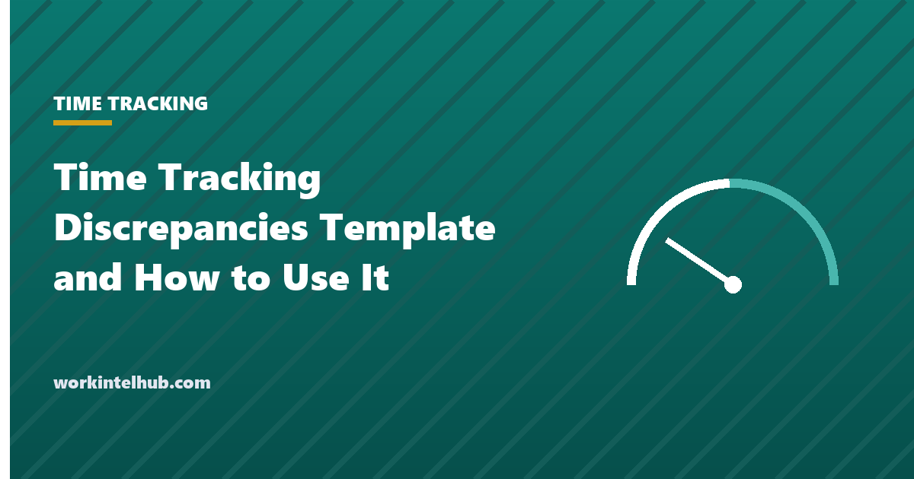

Time Tracking Discrepancies Template and How to Use It

A time tracking discrepancy is any gap between what was recorded and what should have been: a missed punch, a shift logged against the wrong project, a schedule that says eight hours and a clock that says nine and a half, two timesheets for the same day, a break deducted that was never taken. Each one is small. Left unresolved they become overpayments, underpayments, overtime claims and, in an audit, the evidence that the records are unreliable.
The template is a discrepancy log with a resolution workflow: what was recorded, what was expected, the difference, the cause classified, who fixed it, how and when, and whether the employee confirmed the correction. Run it before every payroll close, and the log doubles as the audit trail the Fair Labor Standards Act expects for changes to time records.
Download the templates
Free files: Word, Excel and PDF
Three files, free, no email required. Word to edit, Excel to track, PDF to print or share.
Templates open in Microsoft Word, Excel, Google Docs and Sheets, LibreOffice and any PDF reader. Free to use and adapt for your organisation.
What is in the template
- Discrepancy log. Expected against recorded hours with the difference calculated, a cause code, the resolution, who fixed it and whether the employee confirmed.
- Cause codes. Eight causes with the usual fix and the prevention, so the log can be summarised and the recurring causes addressed.
- Correction form. Original entry, corrected entry, reason and approvals, for the changes that need a signature.
- Payroll close checklist. Seven checks before the register is final.
How to run the discrepancy process
Pull the exceptions two days before payroll closes: missed punches, entries outside the schedule by more than a set tolerance, breaks shorter than policy, overtime, and days with zero hours for a scheduled employee. Most time tracking systems produce these reports; on a spreadsheet, the difference column does the work. Classify each by cause, resolve it with the employee and manager, and record the resolution. Then recalculate overtime, because a corrected Tuesday can change Friday's rate.
The employee confirmation column is not bureaucracy. Under the FLSA the employer is responsible for accurate records, and a correction the employee never saw is the one that becomes a wage claim. A short message, "we corrected your Tuesday clock-out from 5:02 to 6:15 per your manager; reply if that is wrong", is enough.
The rules behind the log
Federal law requires accurate records of hours worked each day and week for non-exempt employees, kept for two years for the underlying time cards and three for payroll (29 CFR part 516). Corrections are lawful; undocumented alterations are the problem, and editing a record downward without the employee's knowledge is the fact pattern in most time-shaving cases. Rounding is permitted only where it is neutral over time, which is why the cause code list treats inconsistent rounding as a discrepancy. The hours worked guide covers what counts as time worked, and the overtime calculator the recalculation after a correction.
Automatic break deductions deserve their own check. Deducting thirty minutes the employee did not take is unpaid work; several state laws require the break to be recorded as taken, and an attestation at clock-out is the usual fix.
Reducing discrepancies at source
- Record to the minute and drop rounding; it removes a cause code entirely.
- Put the clock where people pass it, or on their phones; missed punches fall sharply.
- Lock schedules and limit early punches so schedule-versus-clock exceptions need a manager's reason.
- Ask for a break attestation at clock-out rather than deducting automatically.
- Review the summary-by-cause sheet monthly; the same two causes usually make up most of the log.
Key takeaways
- Run the discrepancy log before every payroll close: expected against recorded, cause coded, resolved, confirmed by the employee.
- Recalculate overtime after corrections.
- Document every change with the original value, new value, reason and approver; undocumented edits are the wage-claim fact pattern.
- Use the cause summary to fix the two or three causes that generate most discrepancies.
Frequently asked questions
What is a time tracking discrepancy?
Any difference between recorded time and what should have been recorded: a missed punch, a shift against the wrong code, a schedule-versus-clock gap, a duplicate, a break deducted but not taken, inconsistent rounding, a system failure, or work reported off the clock. The template classifies each with a cause code.
Can an employer change an employee's time record?
Yes, to make it accurate, with documentation: the original value, the corrected value, the reason, who approved it and when, and notice to the employee. Changing records to reduce pay without the employee's knowledge is the basis of most time-shaving claims under the FLSA.
How long should discrepancy records be kept?
Keep them with the payroll records they support: three years for payroll under the FLSA and two years for the time cards and schedules, longer where state law requires. Many employers keep everything for four years to match the longest common limitation period.
How do I handle a missed punch?
Confirm the actual time with the employee and the manager, enter it with a note that it was a manual correction, and have the employee confirm. Never default a missed punch to the scheduled time without checking; scheduled and actual often differ.
Should breaks be deducted automatically?
Only where the employee attests that the break was taken. Automatic deductions for breaks that were interrupted or skipped are unpaid work, and several states require breaks to be recorded. An attestation prompt at clock-out is the usual safeguard.